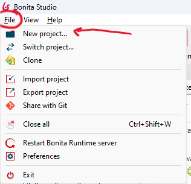
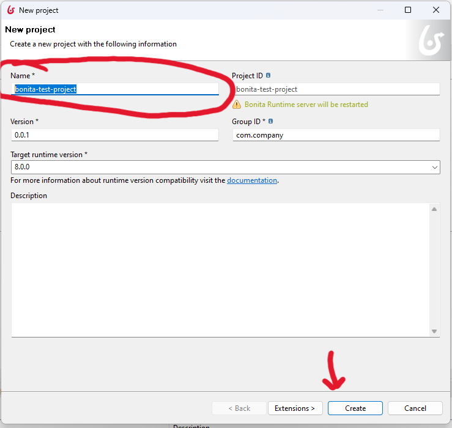
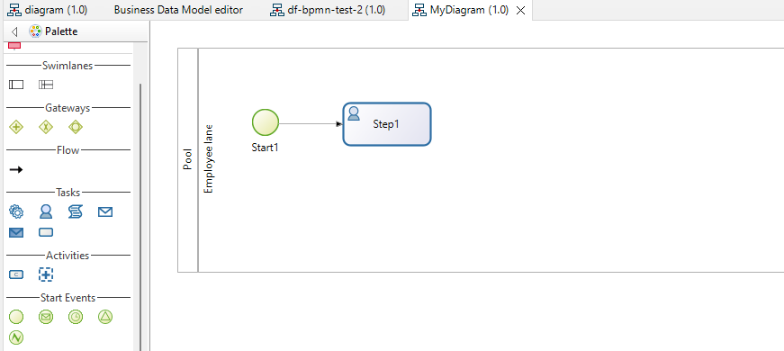

Download Bonita studio
Download and install the latest version of Bonita Studio. For
more details you can refer to the
official
documentation.
Create Project
Follow the steps bellow to create new project and to start modeling within Bonita studio:
-
Start by create new project. Click on "file" -> "New project ...".

-
Rename your project to the new project and click on "create".

-
Create new process diagram by click on "New" (the "+" icon) -> "Process diagram"

-
Now your process diagram is ready to use. You can go to the next exercice to start modeling.
